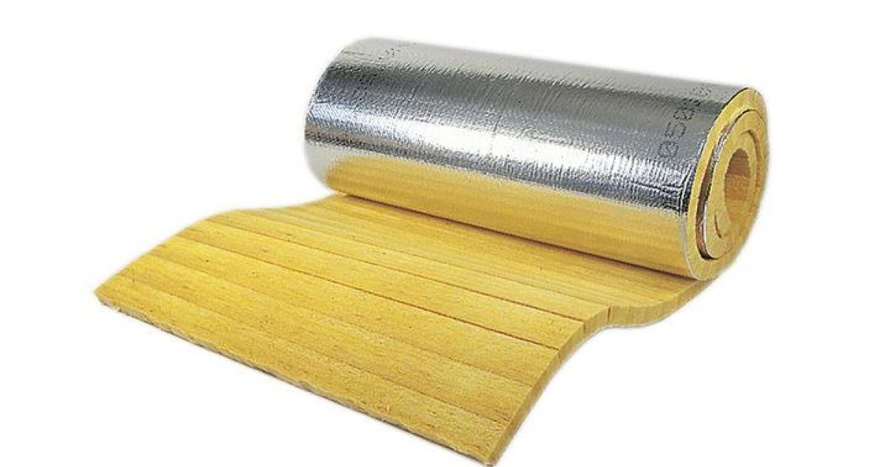
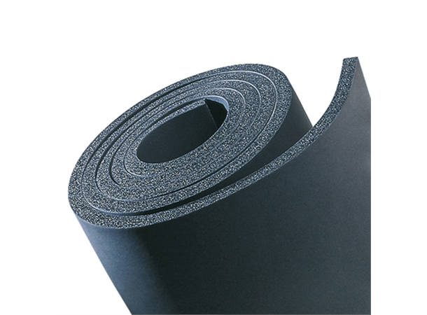

Lamellmatte

Lamellmatte, ensidig dekket med aluminiumsfolie er designet for termisk og akustisk isolasjon av ventilasjons- og klimaanleggskanaler
Mata z wełny mineralnej jednostronnie pokryta folią aluminiową przeznaczona do izolacji termicznej i akustycznej kanałów
wentylacyjnych i klimatyzacyjnych, niskotemperaturowych kotłów, małych zbiorników, rurociągów oraz powierzchni cylindrycznych. Zapobiega
kondensacji pary wodnej, a dzięki prostopadłemu do folii ułożeniu włókien znakomicie zachowuje pierwotną grubość izolacji na ostrych
krawędziach i narożnikach. Temperatura na styku pomiędzy folią aluminiową i wełną nie może przekraczać + 80 °C.
Les mer
tilbake
om materialet
welna:
brannklassifisering: A1
farge: alu
współczynnik przewodzenia ciepła λ: 0,034 W/mK
Temperaturområder: 250 °C
Cellegummi

Izolacja w chłodnictwie przemysłowym i użytkowym, klimatyzacji oraz
zakładach przetwórczych, stosowana w celu zapobiegania korozji i oszczędności energii.
Izolacja/ochrona do rur, kanałów powietrznych, zbiorników (także kształtek i armatury) w chłodnictwie przemysłowym i użytkowym, klimatyzacji oraz
zakładach przetwórczych, stosowana w celu zapobiegania korozji i oszczędności energii. Armaflex ACE jest materiałem o zamkniętej strukturze
komórkowej, produkowanym na bazie syntetycznego kauczuku w kolorze czarnym. Jest bardzo elastyczny i odznacza się wysoką trwałością. Materiał
posiada bardzo dobrą strukturę komórkową, co zapewnia dobre własności termiczne. Jego techniczne parametry oznaczają doskonałą skutecznoość
izolacji oraz ochronę przed kondensacją pary wodnej.
W przypadku płyt przyklejonych całą powierzchnią do zbiornika, kanału lub rury max. temperatura czynnika to +85°C.
Les mer
tilbake
om materialet
armafllex:
brannklassifisering: D-s3, d0
farge: czarny
współczynnik oporu dyfuzyjnego pary wodnej μH2O: > 7000
współczynnik przewodzenia ciepła λ: 0,038 W/mK
Temperaturområder: -50 do +110 °C
Slanger
Otulina elastyczna zapewniająca zabezpieczenia przepustów instalacyjnych.
Materiał to elastyczna pianka elastomeryczna na bazie syntetycznego
kauczuku.
Otulina elastyczna zapewniająca zabezpieczenia przepustów instalacyjnych.
Materiał to elastyczna pianka elastomeryczna na bazie syntetycznego
kauczuku, zawierająca specjalne pęczniejące składniki
ogniochronne. Wystarcza do zapewnienia odporności ogniowej przepustu instalacyjnego, bez
względu na zastosowany materiał izolacyjny. Zapewnia odporność ogniową przepustów
instalacyjnych do 120 minut.
Les mer
tilbake
om materialet
brannklassifisering: D-s3, d0
farge: czarny
współczynnik oporu dyfuzyjnego pary wodnej μH2O: > 7000
współczynnik przewodzenia ciepła λ: 0,038 W/mK
Temperaturområder: -50 do +110 °C
Rørskåler
Otulina z wełny kamiennej do izolacji termicznej i ochrony przeciwkondensacyjnej rurociągów z okładziną z folii aluminiowej i zakładką
samoprzylepną.
Otulina z wełny kamiennej do izolacji termicznej i ochrony przeciwkondensacyjnej rurociągów w
kanałach wentylacyjnych, budynkach i statkach z okładziną z folii aluminiowej i zakładką
samoprzylepną. Dzięki zastosowaniu folii aluminiowej uzyskano estetyczną powierzchnię, która
dodatkowo chroni przed wykraplaniem się pary wodnej z otaczającego powietrza. Otulina ta posiada
otwór w kształcie gwiazdki. Cecha ta sprawia, że otulina dostosowuje swą średnicę wewnętrzną do
różnych średnic zewnętrznych rur z przedziałów 12-18 mm oraz 22-28 mm. Dodatkową zaletą otulin
jest możliwość zastosowania ich na różne rodzaje rur (min. miedzianych, plastikowych i
stalowych), których średnice zewnętrzne mogą odbiegać od standardowych. Temperatura na styku
pomiędzy folią aluminiową i welną nie może przekraczać +80°C.
Les mer
tilbake
om materialet
otulina:
brannklassifisering: A1
farge: alu
współczynnik przewodzenia ciepła λ: 0,034 W/mK
Temperaturområder: 250 °C